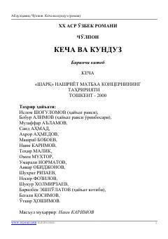

KVOʻtgan asr boshidagi oʻzbek xalqining hayoti va murakkab taqdirlarini ochib beruvchi mashhur roman.
Abdulhamid Choʻlponning ushbu mashhur romani oʻtgan asr boshlaridagi oʻzbek xalqining hayoti, anʼanalari va murakkab taqdirlarini ochib beradi. Birinchi kitobda bosh qahramon Zebiniso hayotidagi bahor nafasi, quvonchli damlar va kelgusidagi ogʻrinli voqealarning debochasi tasvirlanadi. Asar oʻzbek adabiyotining eng sara durdonalaridan biri hisoblanadi.